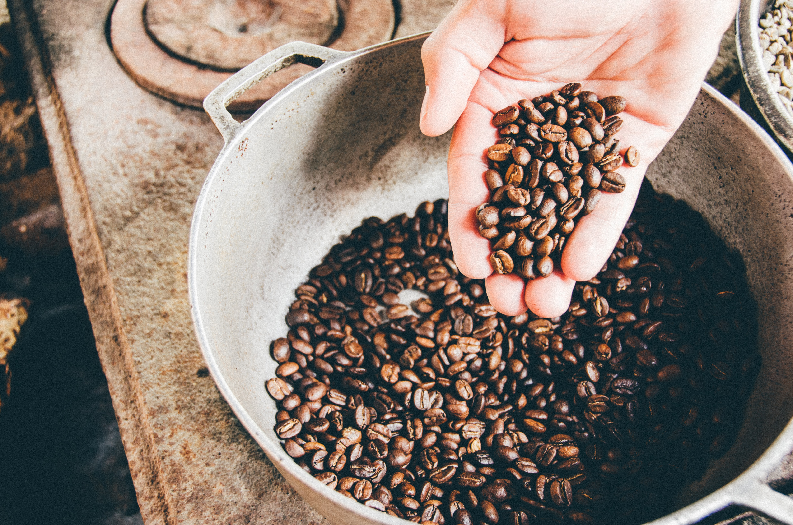

The year was 1980 when WakeCup was imagined after experiencing some of the finest coffees on an educational trip to Brazil and the South Americas. We wanted to break the monotony of low profile, non-descript coffee that was doing rounds in those cafeterias of the 80s. But life threw us in a different direction, and we ended up in the tech industry with a desire to get into the world of coffee someday. In 2005, that dream was brought to fruition when we quit our jobs and started WakeCup. Ever since then, we’ve gone around the world in search for the best beans and we couldn’t be happier. We love spreading smiles through our coffee. Our quest has taken us around the world to some of the finest plantations and estates, many of whom work with us directly or indirectly. In 2016 we started conducting workshops and became the primary sponsors of the Bean King Champion contest. Our baristas have won global accolades and we love serving cuppa goodness.